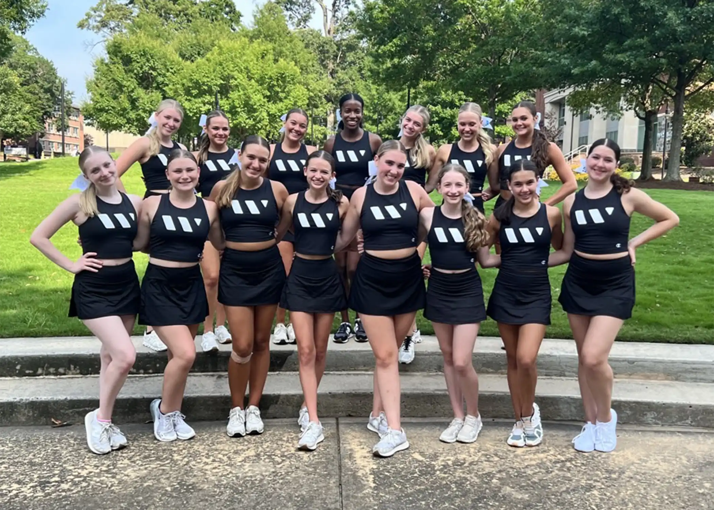
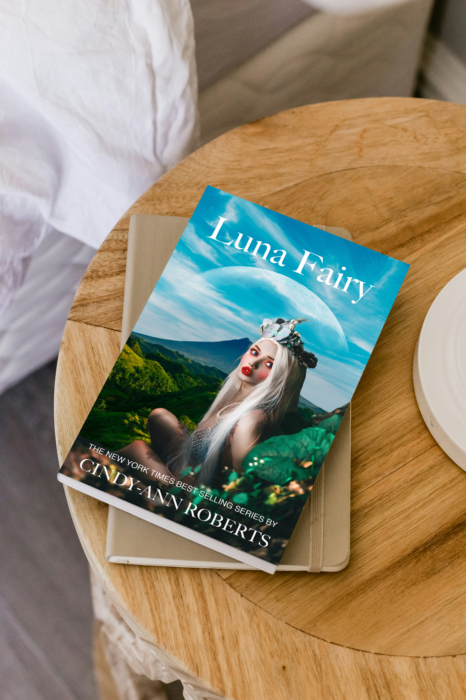
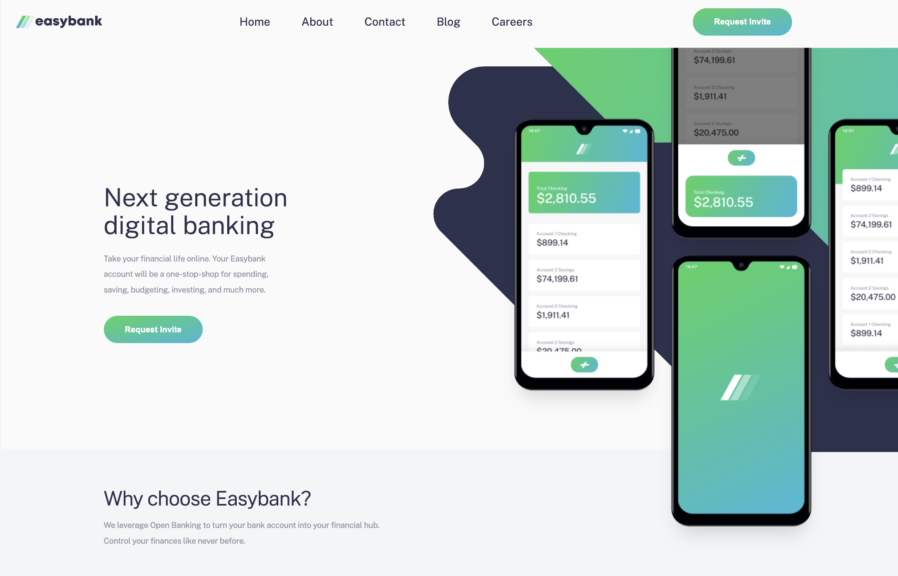

Hi, I’m Cindy-Ann Roberts
I’m a UX designer with a background in frontend development and client support. I create digital experiences that are intuitive, visually engaging, and user-centered.
View My WorkAbout Me
I currently work in client support for a large financial services firm, helping users navigate complex digital platforms. This experience has strengthened my ability to empathize with users, understand their needs, and simplify intricate processes.
With a degree in Frontend Development and Web Design, I combine technical skills with user-centered design thinking to craft interfaces that are both functional and delightful. My passion is designing digital experiences that solve problems while delighting the user.
Featured Work
Diabetes Awareness Website
Adobe XD mockup designed to make health resources accessible and easy to navigate.
High School Dance Team Logo
Custom logo design featured on team apparel and group photos, building team identity.

Nike Concept Ad
Photoshop project combining photography and digital design, presented as a campaign ad.
Luna Fairy Book Jacket
A creative book cover design combining images of a fairy, ocean, and mountain to craft an imaginative scene.
Easy Bank (Frontend Mentor)
A project demonstrating my ability to take a design file and code it in HTML/CSS, faithfully replicating the layout and styling.

Prestige Dance Institute Program Book
Designed and produced a full-color printed book featuring paid ads for individual dances, rehearsal schedules, and show information. Showcases layout, typography, and print production skills.
Get In Touch
If you’d like to collaborate or learn more about my work, feel free to reach out!
Email: cindyannroberts1@gmail.com
LinkedIn: linkedin.com/in/cindyannroberts/